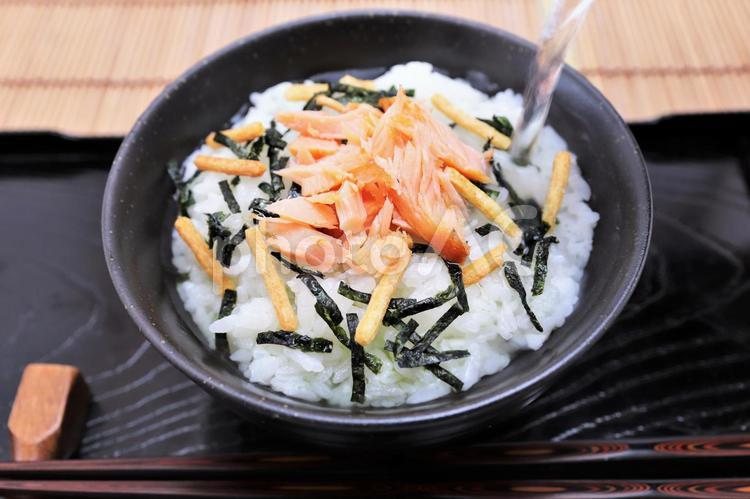

HOME
Salmon Tea Rice Recipe

Description
Growing up in indonesia made it a somewhat staple to eat fishes my mom make sure that i liked fish too. And salmon is one of my go to fishes to satiate that cravings. though never in my wildest dream that i would combine fish with tea. Somehow it worked, the taste wasn't too strong and had a warm broth from the tea which somehow mixes perfectly.
Ingredients
- 2 Cupof cooked short grain rice, warm or room temperature
- 1/2 pound of salmon
- 2-4 Cup of green tea
- 1 Teaspoon of Wasabi paste
- 2-4 Teaspoon of soy sauce
- 2 Strips of seaweed or some furikake
- A generous amount of salt
Instructions
For dashi
- Steep In a sauce pan, bring water to a boil over medium-high heat. Turn off heat, add bonito flakes, and cover. Steep dashi for 15 minutes. While the dashi steeps, make the pickled veggies to save time.
- Strain. Strain the dashi through a fine mesh strainer into a clean bowl. Reserve the saucepan.
- Season. To the strained dashi, add soy cause, mirin, and salt. Stir until salt is dissolved. Pour the dashi back into the saucepan and keep it warm over very low heat.
For pickled veggies
- Make brine. In a medium bowl, stir rice wine vinegar, sugar, and salt together until sugar is dissolved.
- Add vegetables. Add carrots and cucumber to vinegar mixture. Toss together until vegetables are evenly mixed in
- Set aside. Let vegetables stand at room temperature while preparing other components, stirring occasionally.
For Salmon
- Prep oven and pan. Turn on broiler to high heat. Line a small rimmed baking sheet with aluminum foil.
- Prep salmon. Place salmon fillets skin side down on prepared pan. Season salmon with salt and brush with olive oil.
- Cook salmon. Broil salmon 6 to 8 inches from heat until salmon is cooked through, about 8-12 minutes. Flake the salmon with a fork. Set aside.
For serving
- Fill bowls Add rice to serving bowls the top with flaked salmon, edamame, and pickled vegetables.
- Add dashi. Pour in desired amount of warm dashi. Sprinkle with furikake. Serve immediately.